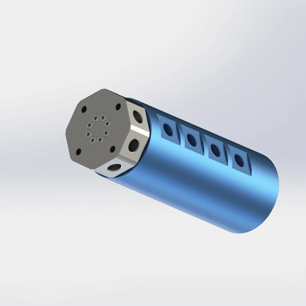

8-passage flange-mount rotary joint for pneumatic and light fluid applications. PTFE composite seal, AL6061 aluminum body. Ships in 7 days. Used on high-density multi-station indexing tables, packaging machinery, and complex pneumatic distribution systems where 8 independent air channels must rotate through a single compact interface.
BP-8P-0001 is an 8-passage rotary joint designed for high-density pneumatic and light fluid transfer in automation systems. The AL6061 aluminum body is hard-anodized for corrosion resistance and thread durability. The PTFE composite seal provides self-lubricating low-friction operation across air, water, coolant, and light hydraulic oil media. With 8 independent passages, this joint replaces multiple smaller unions, reducing leak points and simplifying machine plumbing.
| Model Number | BP-8P-0001 |
|---|---|
| Number of Passages | 8-in-8-out (8 passages) |
| Mount Type | Flange Mount (4-M5) |
| Max Pressure | 1 MPa (10 bar / 145 psi) |
| Max Speed | 200 RPM |
| Body Material | AL6061 Aluminum Alloy |
| Seal Type | PTFE (Teflon) Composite Seal |
| Compatible Media | Air, Water, Water-Soluble Coolant, Light Hydraulic Oil (ISO VG 32 max) |
| Operating Temperature | -20°C to +80°C |
| Net Weight | Approx. 0.85 kg |
| Certifications | ISO 9001:2015, CE, RoHS |
| Warranty | 12 Months |
AL6061 Aluminum Alloy body: T6 temper aluminum with yield strength 276 MPa and excellent machinability. The hard-anodized surface layer (25–30 μm) provides wear resistance and corrosion protection for industrial automation environments. At 0.85 kg for 8 passages, the body achieves a high channel density while maintaining flange rigidity. The 4-M5 flange bolt pattern matches common automation rotary table standards. For applications with heavy impact or vibration, a 45# steel flange insert is available as a custom option.
PTFE composite seal: Polytetrafluoroethylene with glass fiber and graphite filler provides self-lubricating properties and a low friction coefficient (0.05–0.10 against aluminum). The composite structure maintains seal integrity across all 8 passages without cross-contamination. For 8-passage designs, seal alignment is critical — each passage has an independent seal ring machined to ±0.02 mm concentricity to ensure equal pressure distribution and prevent inter-passage leakage.
When to specify high-temp or FDA options: For continuous operation above +80°C, specify a PEEK seal matrix rated to +150°C. For food-grade or pharmaceutical applications, specify 304/316 stainless steel body with FDA 21 CFR 177.2600 compliant seal. Both options add 5–7 days to lead time.
BP-8P-0001 is designed for applications that need 8 or more independent air or fluid channels in a compact rotating interface. It is the highest passage count in the standard BP-series flange-mount family. Below are the machine types where this model performs best.
Proper installation of BP-8P-0001 requires careful management of 8 pneumatic connections and strict adherence to flange torque specs. The most common failure mode is using rigid pipe instead of flexible hose, which transfers side loads directly to the flange and distorts the seal housing. Follow these steps for reliable 8-passage operation.
Confirm your equipment flange has 4×M5 threaded holes on a compatible bolt circle diameter. Download the 2D PDF for exact P.C.D., hole diameter, and flange thickness. Do not use oversized screws — M6 screws will strip the aluminum threads and create a loose joint that wobbles under hose load. Use M5×16 mm screws with a minimum engagement depth of 8 mm. Check flange flatness with a straightedge; any warp >0.05 mm will distort the seal housing.
Secure the flange using 4×M5 screws with spring washers. Torque to 3–4 N·m. Overtightening beyond 5 N·m warps the aluminum flange face, reducing the seal housing clearance and causing binding between passages. Because BP-8P-0001 has 8 closely spaced seals, even 0.1 mm of flange warp can cause inter-passage leakage. Tighten in a cross pattern (1-3-2-4) to distribute pressure evenly. Use a torque wrench — "snug plus a quarter turn" is not precise enough for an 8-passage aluminum body.
If your model includes an anti-rotation tab, secure it to a fixed bracket with an M3 screw. Never let the body rotate freely with the shaft. Free rotation twists 8 pneumatic hoses into a dense helix that creates massive torsional stress. With 8 hoses, the combined torque is 4× higher than a 2-passage joint, and a loose anti-rotation setup will fail within days. Use a rigid metal bracket bolted to the machine frame, not a zip-tie or cable clamp.
Use flexible polyurethane or nylon hoses (6×4 mm or 8×5 mm) for all 8 passages. Rigid pipe is prohibited — it transfers vibration and thermal expansion directly to the joint, stressing the 8 seal rings simultaneously. Rigid pipe also makes maintenance impossible; you cannot remove the joint without disconnecting 8 hard lines. Install a 40-micron filter upstream of each passage to protect the PTFE seal from debris. For coolant or water, add a Y-strainer (60 mesh). Label each hose at both ends with passage numbers (1–8) to prevent cross-connection during maintenance.
Run at low pressure (0.2 MPa) and low speed (50 RPM) for 5 minutes without load. Check all 8 passages for leaks with soapy water. Because there are 8 independent seals, a single leak indicates a localized seal issue, not a systemic failure. If all 8 are dry, gradually increase to operating pressure and speed over 10 minutes. Skipping the run-in is the #2 cause of early seal failure in multi-passage joints — the PTFE seal needs time to conform to the shaft surface finish, and running all 8 passages at full pressure immediately overloads the unbedded seals.
Full dimensions, tolerances, flange bolt pattern (4-M5), thread specs, 8-passage seal layout, and port numbering. 120 KB.
Free 3D files provided after inquiry. Includes flange mount pattern, 8 port positions, anti-rotation tab geometry, and hose clearance envelope. Use for CAD fit verification before ordering.
Complete guide: flange mounting, 4-M5 torque specs, anti-rotation, 8-passage hose routing, filtration, run-in procedure, and maintenance checklist. 650 KB.
AL6061 aluminum material traceability, anodizing thickness report, PTFE seal composition, and RoHS compliance. Available upon request.
Not sure if BP-8P-0001 is the right model? Use this comparison to decide — and know exactly when to upgrade to a custom design or downsize to a lighter model.
| Your Requirement | BP-8P-0001 Fit | Better Alternative | Why Upgrade |
|---|---|---|---|
| 8 air lines, rotary table or turntable | ✅ Perfect — highest passage count in standard range | — | — |
| 6 air lines or fewer, weight critical | ✅ Good, but over-specified | BP-4P-30-0001 + BP-2P-0001 | Two smaller joints may be lighter and lower cost if 8 passages are not needed |
| 4 air lines + Ø30mm hollow bore | ❌ No hollow bore | BP-4P-30-0001 | 4 passages with Ø30mm hollow bore for cable or shaft through-center |
| 3 air lines + 6 electrical circuits | ❌ No electrical integration | BP-3P-S06-0001 | Integrated slip ring with 6 circuits in same body size |
| Pressure >1.0 MPa (e.g., 1.2 MPa hydraulic) | ❌ Over pressure rating | BP-2P-0002 | 1.5 MPa rated, steel body, threaded mount for higher pressure |
| Dusty or abrasive environment (steel mill, foundry) | ❌ No dust protection | BP-2P-50-0001 | Dust-proof seal and protective shroud for abrasive environments |
| Food-grade or medical cleanroom | ❌ Standard anodized aluminum not FDA | Custom FDA-grade | 304/316 stainless steel body with FDA 21 CFR 177.2600 compliant seal |
The #1 cause of BP-8P-0001 warranty claims is warped flange faces from overtightening. A technician uses an impact driver and applies 7–8 N·m on M5 flange bolts rated for 3–4 N·m. The aluminum flange distorts, compressing the 8 seal housings unevenly and creating inter-passage leak paths. Within 48 hours, air bleeds from passage 3 into passage 5, causing pressure interference and dropped workpieces. The technician blames the PTFE seal quality and requests a replacement — but the root cause was flange torque. Rule: Use a torque wrench. Tighten 4-M5 flange bolts to 3–4 N·m in a cross pattern. Check flange flatness with a straightedge after tightening.
A machine builder connects all 8 passages with rigid copper pipe to "make it look neat." The rigid pipe transfers every vibration from the compressor and every thermal expansion cycle directly to the joint. Within 3 months, the flange bolts loosen from cyclic stress, and the seal housing shifts 0.05 mm, causing leaks at passages 2, 4, and 7. The builder replaces the seal, but the rigid pipe destroys the new seal in the same way. Rule: Use flexible polyurethane or nylon hose for all 8 passages. Rigid pipe is acceptable only on the stationary side, 200+ mm away from the joint. Flexible hose absorbs vibration and allows the joint to be removed for maintenance without disconnecting hard lines.
A maintenance team installs BP-8P-0001 on a packaging turntable and immediately runs all 8 passages at 0.8 MPa and 150 RPM. The PTFE seals have not bedded into the shaft surface, and running 8 passages simultaneously generates 8× the friction heat of a single-passage joint. The center seals overheat, soften, and lose contact pressure. Within 2 weeks, 4 of 8 passages leak. The team replaces the seal, but the same thing happens because they skip the run-in every time. Rule: Run at 0.2 MPa and 50 RPM for 5 minutes before full operation. Check all 8 passages with soapy water during run-in. This beds the seals gradually and prevents thermal overload.
Other rotary joints commonly purchased with BP-8P-0001 — or the models you downgrade to when 8 passages are more than your application needs.
The standard version uses AL6061 aluminum body for lightweight and corrosion resistance. For stainless steel body options, contact our team. All versions are ISO9001 certified. The export version includes English-language documentation, CE marking, and RoHS compliance certificate. The domestic version is identical in mechanical performance but ships with Chinese-language documentation. Both versions use the same PTFE composite seal and are 100% pressure tested at 1.0 MPa for 60 seconds before shipment.
Yes — the PTFE composite seal is compatible with water, water-soluble coolant, and light hydraulic oil (up to ISO VG 32). The AL6061 aluminum body is anodized for additional corrosion resistance. For continuous water duty, derate pressure to 0.7 MPa and speed to 150 RPM to reduce seal wear across all 8 passages. The anodized surface provides good protection for intermittent water exposure, but continuous immersion or aggressive synthetic coolant may require a nickel-plated or stainless steel (304/316) version. If your application involves deionized water or phosphate ester coolant, contact Begapunk for seal compatibility review before ordering.
BP-8P-0001 uses a 4-M5 flange bolt pattern on a standard bolt circle diameter. Download the 2D PDF drawing for exact P.C.D., hole size, and tolerances. Ensure your equipment mating flange matches before ordering. Custom flanges with different P.C.D., hole count, or thickness are available upon request with a 5–7 day custom lead time. The flange face must be flat within 0.05 mm to ensure even seal compression across all 8 passages. Use M5×16 mm screws with a minimum thread engagement of 8 mm in the mating flange.
Yes — free 3D STEP and IGES files are provided after you send an inquiry email. The file includes the AL6061 body geometry, 4-M5 flange bolt pattern, 8 port positions, anti-rotation tab geometry, and hose clearance envelope. Use the 3D file to verify clearance, port direction, and thread engagement length in your CAD assembly before ordering. We do not post 3D files publicly to protect our designs, but every qualified inquiry receives the file within 24 hours. Include your CAD platform name (SolidWorks, Inventor, Fusion 360, etc.) for optimized file formatting.
Upgrade when your application needs more than 8 air passages, pressure above 1.0 MPa, or a hollow bore for cable through-center. Common triggers: (1) You need 10–12 pneumatic functions on a single rotary table — Begapunk designs custom 10-passage and 12-passage joints with the same flange footprint. (2) Your pressure requirement exceeds 1.0 MPa — a custom steel-body design with thicker walls handles 1.5–2.0 MPa across 8 passages. (3) You need a Ø20mm or Ø30mm hollow bore with 8 passages — contact engineering for hollow-bore multi-passage custom designs. (4) Your environment becomes dusty or abrasive — specify sealed bearings, protective shrouds, and dust-proof seals. The custom upgrade cost is typically $80–$200 more than BP-8P-0001, with a 10–14 day lead time.
We design custom rotary joints for any number of passages, pressure, thread type, and mounting style. Free 3D STEP file with every inquiry. Typical custom lead time: 10–14 days.
Request Custom Design →Technical Note: All pressure ratings, speed ratings, and material specifications referenced on this page are based on Begapunk BP-series standard pneumatic rotary joints tested under controlled laboratory conditions. Actual performance depends on operating conditions, media quality, installation practices, and maintenance schedule. For applications outside standard ratings — including high-pressure hydraulic, continuous water immersion, food-grade, or cleanroom environments — consult Begapunk factory engineering before specification. Last updated: June 11, 2026.